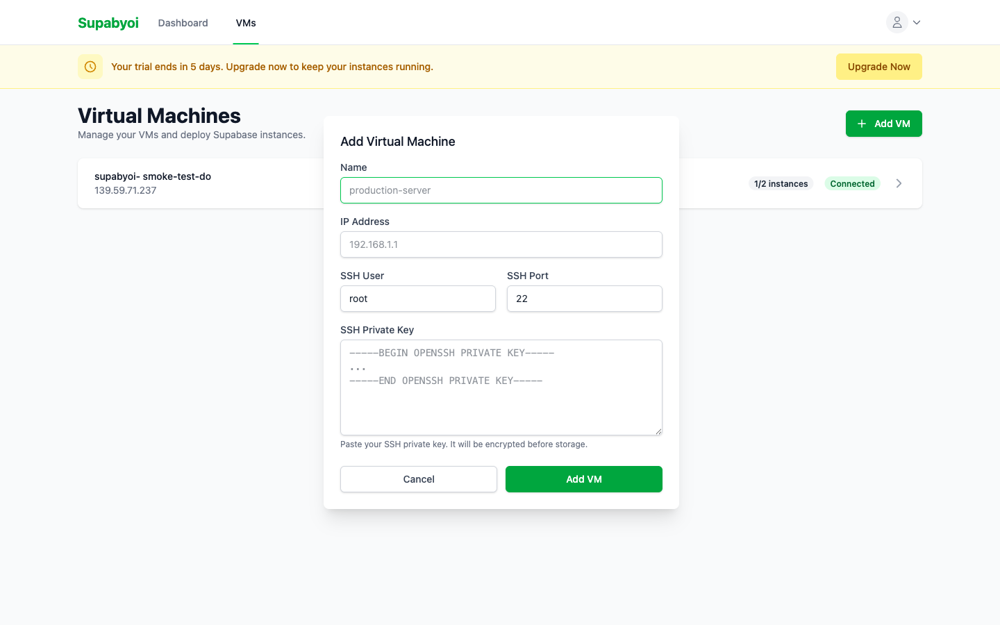
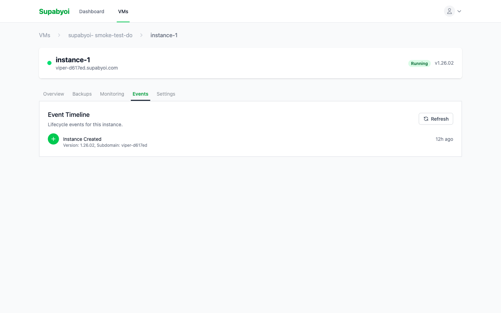
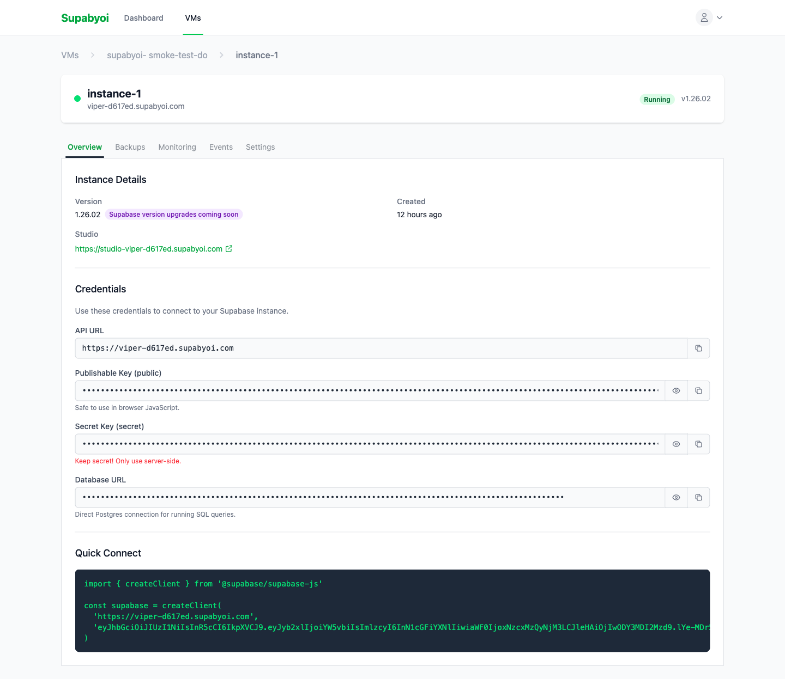

Documentation
Getting Started
Deploy a fully-managed, self-hosted Supabase instance on your own VPS in minutes. No Docker expertise required.
Prerequisites
Before you deploy your first Supabase instance, make sure your VPS meets these requirements. Supabyoi handles the installation automatically — you just need a clean server.
- Ubuntu VPS — Tested and recommended. Other Linux distributions are detected but Ubuntu is the primary supported target.
- Minimum 4 GB RAM — Each Supabase instance requires approximately 4 GB of RAM for all services to run stably.
- Root SSH access — You'll need an RSA or Ed25519 private key with root (or sudo-capable) access to your server.
- Ports 80 and 443 free — Nothing else should be listening on these ports. Nginx will be configured to handle all HTTP/HTTPS traffic.
- Docker not required — Supabyoi automatically installs Docker and Docker Compose during the deployment process.
Your First Deployment
Follow these steps to go from a blank VPS to a fully running Supabase instance. The entire process typically takes 5–10 minutes.
-
1
Sign up
Create your account at app.supabyoi.com. No credit card required to get started.
-
2
Add your VM
Navigate to the VMs section and click "Add VM". Enter your server's IP address, SSH port (default: 22), SSH username, and paste your private key. Supabyoi stores keys encrypted at rest.
 -
3
Wait for auto-hardening ~2 minutes
After adding your VM, Supabyoi automatically runs a security hardening pass: creating a dedicated user, configuring SSH, installing required packages, and setting up firewall rules. You'll see the status update in the UI when it's done.
-
4
Deploy an instance
Click "Deploy Instance" on your VM and choose a subdomain name. Your instance will be available at
https://{name}.supabyoi.com. Supabyoi generates all credentials automatically — JWT secrets, API keys, database passwords. -
5
Watch real-time logs
Deployment progress streams live to your browser. Each step — Docker installation, container startup, health checks, TLS provisioning — is logged in real time so you always know what's happening.
 -
6
Access your Supabase
Once deployment completes, your Supabase Studio is live. Visit
https://{name}.supabyoi.comto open the Studio UI, or use the API URL and credentials shown on the instance detail page.
What Gets Deployed
Each Supabase instance runs as 8 Docker services orchestrated by Docker Compose. All services are isolated per instance and port-mapped to avoid conflicts when running multiple instances on the same VM.
PostgreSQL
Supabase-flavored Postgres with extensions pre-installed
Kong
API Gateway — routes and authenticates all API requests
PostgREST
Auto-generated REST API from your Postgres schema
GoTrue (Auth)
User authentication with JWTs, OAuth, magic links
Realtime
WebSocket server for live database change subscriptions
Storage
S3-compatible file storage with access policies
Meta
Postgres metadata API used by Studio for schema management
Studio
The official Supabase web UI — table editor, SQL editor, and more
Next Steps
Once you have a running instance, explore these guides to get the most out of Supabyoi.